Измерение индукции переменного и импульсного магнитного поля с помощью измерительной катушки и RC-интегратора
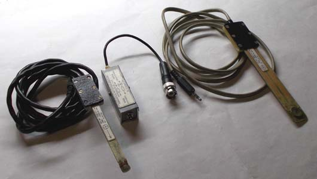
1. Введение
Несмотря на существование широкого спектра разнообразных типов датчиков магнитного поля
[3, 4], измерительные катушки [3 - 6, 10] по прежнему во многих случаях остаются вне конкуренции по простоте и технологичности изготовления, удобству применения и точности измерений. Для совместной работы с измерительными катушками применяются разнообразные электронные схемы, среди которых существенное место принадлежит различным типам интеграторов. С помощью неподвижной катушки можно производить измерения магнитного потока или магнитной индукции переменных и импульсных магнитных полей [15, 16]. Измерения в постоянных магнитных полях можно выполнять, осуществляя механическое линейное или угловое перемещение катушки, в частности, ее вращение.2. Теория
В соответствии с законом электромагнитной индукции Фарадея [9, 18] электродвижущая сила (ЭДС) E(t) катушки индуктивности в переменном (изменяющемся во времени), в частности, в импульсном магнитном поле:
где Y
(t) – потокосцепление катушки с магнитным полем в момент времени t. Потокосцепление катушки Y(t) с однородным магнитным полем, индукция которого равна B(t) (ось катушки ориентирована параллельно полю):
где S – площадь, охватываемая контуром с числом витков dN, а интегрирование числа витков dN ведется по всему объему катушки. Таким образом:
где <SN> – коэффициент преобразования измерительной катушки (фактически, ее полная площадь потокосцепления с однородным магнитным полем, имеющим плотность потока B
(t)):
Тогда уравнение электромагнитной индукции может быть записано в виде:
Отсюда получаем:
Проведем интегрирование обоих частей уравнений по времени от нуля до некоторого момента времени t:
В левой части уравнения имеем изменение магнитной индукции DB(t) за время от 0 до t:
В предположении B(0) = 0 (переменное или импульсное магнитное поле в начале измерений отсутствует или равно нулю, а наличие постоянного магнитного поля не учитывается, так как оно не создает электрического сигнала в неподвижной катушке):
Для интегрирования ЭДС можно использовать простую RC-цепь, показанную на рис.
2.1.
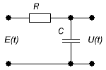
Рис.
2.1. Схема электрическая принципиальная RC-интегратора: E(t) - входное напряжение, U(t) - напряжение на выходе интегратора.На вход RC-цепи из последовательно включенных резистора R и конденсатора C подается переменное или импульсное напряжение E(t). Напряжение на резисторе UR
(t) при токе в цепи i(t) определяется законом Ома [18]:
Для напряжения на конденсаторе C, равному выходному напряжению интегратора U
(t), можно записать:В соответствии со вторым правилом Кирхгофа [18]:
Это выражение можно переписать в виде:
Тогда:
Выполняя интегрирование по временному интервалу
[0, t], получаем:
где U
(0) – начальное напряжение на выходе интегратора в момент времени t = 0, обычно U(0) = 0. При выполнении условия
что по сути соответствует условию
t << RC, и U(0) = 0 имеем:
Так как:
то можно вывести соотношения между магнитной индукцией
B(t) и выходным напряжением интегратора U(t):
Например, для R =
5 кОм, C = 20 мкФ (RC = 0.1 с) и <SN> = 0.01 м2 (100 витков площадью 1 см2 каждый) B(t) = 10U ∙ (-1 Тл/В), т. е. коэффициент пересчета напряжения в магнитную индукцию для измерительной катушки с интегратором составит -10 Тл/В.Пусть индукция магнитного поля B(t) изменяется во времени t по гармоническому закону с амплитудой B0 и частотой f:
Так как выходное напряжение интегратора определяется формулой:
то оно также будет изменяться по тому же закону (без учета фазы):
Амплитудное, действующее и среднее значение выходного напряжения интегратора соответствуют амплитудному, действующему и среднему значению магнитной индукции и могут быть измерены соответствующим вольтметром переменного напряжения или осциллографом.
3. Измерительная катушка
Измерительная катушка может быть произвольной формы. На практике удобно изготавливать и применять катушки в виде цилиндрического соленоида (рис. 3.1), который определяется следующими параметрами: высота H, внешний радиус R2, отверстие радиуса R1, диаметр обмоточного провода D, фактор упаковки l
[13].
Рис. 3.1. Цилиндрический соленоид: H – высота, R1 – радиус отверстия, R2 – внешний радиус.
Предположим, что катушка находится в однородном магнитном поле, то есть в пределах габаритов катушки изменением величины и направления поля можно пренебречь. Потокосцепление катушки Y с однородным магнитным полем, индукция которого равна B (ось катушки ориентирована параллельно полю):
где интегрирование числа витков dN ведется по всему объему соленоида. С учетом того, что при равномерной намотке в радиальном слое толщиной dx высотой H (высота катушки) число витков dN определяется формулой:

можно записать:
Таким образом:
Или
где <SN> – площадь потокосцепления измерительной катушки (фактически, ее полная площадь сцепления с однородным магнитным потоком, имеющим плотность B). Для катушки в виде цилиндрического соленоида:

Параметры измерительной катушки, в том числе и ее площадь потокосцепления, могут быть рассчитаны с помощью программы Coil [1]. Примеры расчета и внешний вид вмонтированных в щуп двух измерительных катушек в форме цилиндрических соленоидов разных габитусов (С-типа для измерения продольных и М-типа для измерения поперечных магнитных полей) приведены ниже.

Рис. 3.2. Расчет измерительной катушки М-типа с площадью потокосцепления <SN> ≈ 0.01 м2 (10000 мм2) с помощью программы Coil.
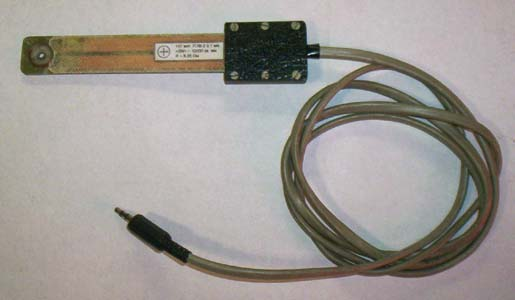
Рис.
3.3. Внешний вид измерительной катушки М-типа с площадью потокосцепления <SN> ≈ 0.01 м2 (10000 мм2).
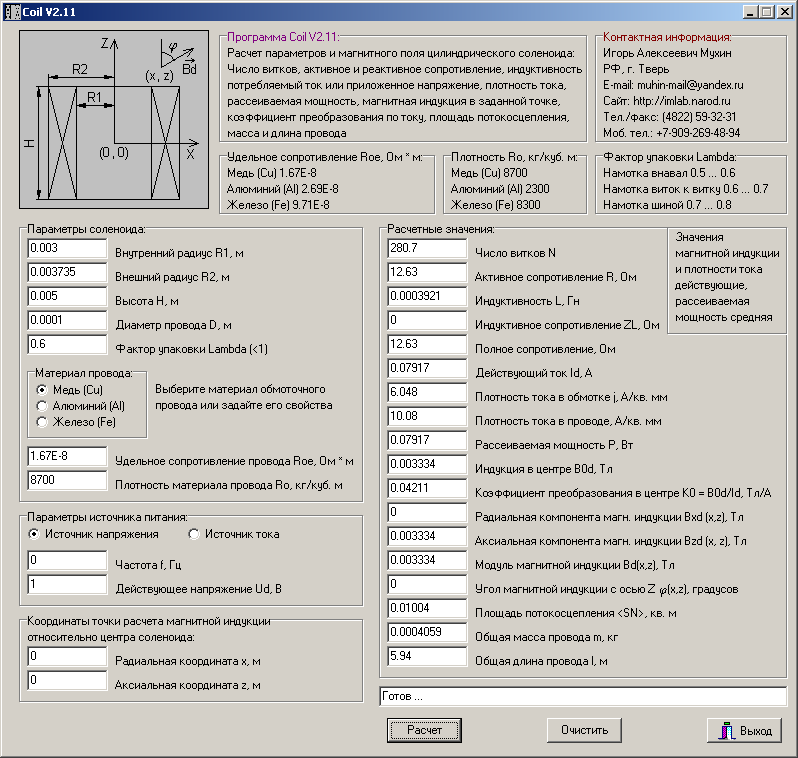
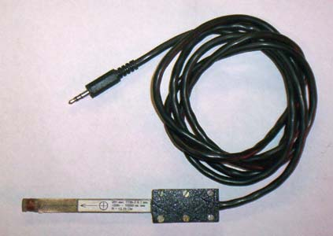
Схема подключения выводов измерительных катушек показана на рис. 3.6. Выводы катушки подключаются к экранированному двухжильному кабелю по дифференциальной схеме, кабель подключается к разъему типа аудио-стерео штыревого типа диаметром 3.5 мм. При наличии в щупе металлических деталей экран кабеля соединяется с ними.
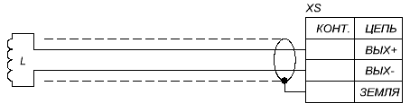
Рис. 3.6. Электрическая принципиальная схема подключения выводов катушки к разъему.
В таблице 3.1 приведены параметры представленных выше измерительных катушек. Активное сопротивление катушек (в сборе) измерялось мультиметром APPA-107N, а индуктивность - LC-метром
ET430 на частоте 1000 Гц.Таблица 3.1. Параметры измерительных катушек.
| Тип катушки | Примерная площадь потокосцепления, мм2 | Активное сопротивление (расчет), Ом | Активное сопротивление (измерение), Ом | Индуктивность (расчет), мГн | Индуктивность (измерение), мГн |
| М-тип | ≈10000 | 7.798 | 8.25 | 0.1824 | 0.189 |
| С-тип | ≈10000 | 12.63 | 13.16 | 0.3921 | 0.392 |
При использовании измерительной катушки с площадью потокосцепления <SN> ≈ 10000 мм2 с интегратором с постоянной времени RC = 0.1 с коэффициент пересчета напряжения на выходе интегратора в соответствующее ему значение магнитной индукции составляет -10 Тл/В. При увеличении постоянной времени интегратора на порядок до 1 с коэффициент пересчета также изменится на порядок до -100 Тл/В.
4. Конструкция интегратора
Электрические принципиальные схемы RC-интеграторов с разными постоянными времени (0.1 и 1 с) показаны на рис. 4.1 и 4.2. Устройства собраны по сходным схемам, отличаются лишь номиналы и количество некоторых элементов.
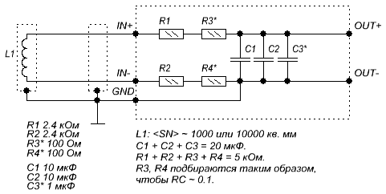
Рис. 4.1. Схема электрическая принципиальная RC-интегратора с постоянной времени 0.1 с для измерения магнитной индукции с помощью измерительной катушки.
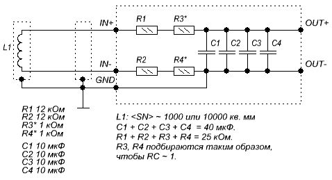
Рис. 4.2. Схема электрическая принципиальная RC-интегратора с постоянной времени 1 с для измерения магнитной индукции с помощью измерительной катушки.
Напряжение с выводов измерительной катушки L1 с приблизительно известной площадью потокосцепления <SN> (площадь потокосцепления предпочтительнее, хотя и не обязательно, задавать кратной десяти) подается на входы IN+ и IN- устройства и через резисторы R1R3 и R2R4 поступает на конденсаторы C1C2C3 (или C1C2C3C4). Постоянная времени цепи R1R2R3R4C1C2C3 (или R1R2R3R4C1C2C3C4) должна быть примерно равна 0.1 с (или 1 с). Для точной установки постоянной времени необходимо измерить емкости конденсаторов (они в сумме должны составлять примерно 20 мкФ (или 40 мкФ)) и вычислить требуемое сопротивление цепочек резисторов R1R3 и R2R4 (в сумме около 5 кОм (или 25 кОм)). С помощью резисторов R3 и R4 можно осуществить точный подгон сопротивления. К выходам OUT+ и OUT- может быть подключен вольтметр переменного напряжения, пиковый вольтметр или осциллограф.
Эскиз печатной платы устройств показан рис. 4.3. Монтаж выполнен поверхностным способом (с использованием SMD-элементов) на верхней стороне печатной платы, нижняя сторона используется в качестве общего провода. Печатная плата помещается в экранирующий корпус с крышкой (рис. 4.4, 4.5). На одном торце корпуса расположен разъем (типа аудио-стерео, гнездовой, диаметром 3.5 мм) с дифференциальным входом для подключения измерительной катушки, с другого торца выходит коаксиальный кабель с BNC-разъемом для подключения к измерительному прибору.
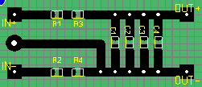
Рис. 4.3. Эскиз печатной платы RC-интегратора для измерения магнитной индукции с помощью измерительной катушки: двухсторонний фольгированный стеклотекстолит, размер 35 х 15 мм2.
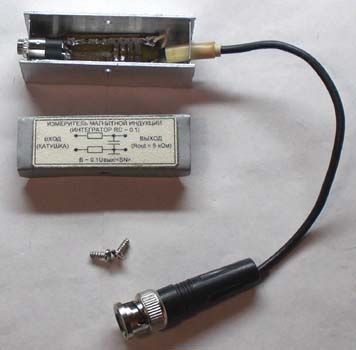
Рис. 4.4. Вид на внутренний монтаж RC-интегратора для измерения магнитной индукции с помощью измерительной катушки
.
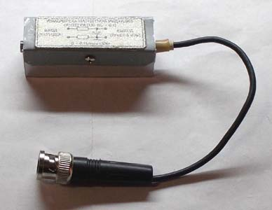
Рис. 4.
5. Внешний вид RC-интегратора для измерения магнитной индукции с помощью измерительной катушки в сборе.Внешний вид
RC-интегратора с различными измерительными катушками и осциллографом 2C53T показан на рис. 4.6, 4.7. Катушка М-типа предназначена для измерения поперечного магнитного поля внутри узких зазоров и, соответственно, имеет небольшую высоту и расположена в плоскости щупа, который обеспечивает боковой доступ катушки в зону измерений. Катушка С-типа предназначена для измерения продольного магнитного поля в узких каналах, имеет по возможности небольшой диаметр и располагается на торце щупа соосно с ним.
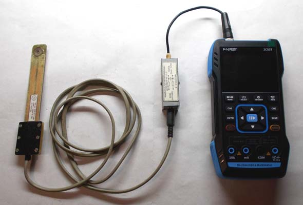
Рис. 4.6
. Внешний вид RC-интегратора для измерения магнитной индукции с осциллографом 2C53T и измерительной катушкой М-типа с площадью потокосцепления <SN> ≈ 10000 мм2.
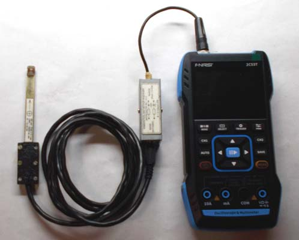
Рис.
4.7. Внешний вид RC-интегратора для измерения магнитной индукции с осциллографом 2C53T и измерительной катушкой С-типа с площадью потокосцепления <SN> ≈ 10000 мм2.5. Испытания в импульсном магнитном поле
Параметры измерительных катушек (активное сопротивление и индуктивность) с достаточной степенью точности соответствуют расчетным (см. таблицу 3.1).
Испытания в импульсном магнитном поле проводились по схеме, представленной на рис. 5.1, с датчиком Холла (1) в качестве образцового. В качестве источника импульсного поля использовалась малогабаритная установка импульсного намагничивания-размагничивания постоянных магнитов [11, 15], состоящая из импульсного индуктора (3) с проходным отверстием диаметром 15 мм и емкостного накопителя энергии [7] в качестве генератора импульсов тока. Измерительная катушка (2) С-типа совместно с датчиком Холла (1) типа ПХЭ606118В [8] помещалась в рабочую зону импульсного индуктора (3). Измерительная катушка подключалась к RC-интегратору, а датчик Холла - к тесламетру [12]. С выхода RC-интегратора сигнал подавался на вход КАНАЛ 1 осциллографа 2C53T. На вход КАНАЛ 2 подавался сигнал непосредственно с сигнальных выводов датчика Холла (во избежание фазовых сдвигов и снижения амплитуды сигнала). Тесламетр в данной схеме использовался только для питания датчика Холла.
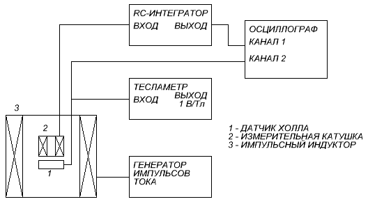
Рис. 5.1
. Схема установки для проведения испытаний измерительных катушек с RC-интегратором в импульсном магнитном поле: сигнал на вход КАНАЛ 2 осциллографа подается непосредственно с выводов датчика Холла, тесламетр используется как источник тока для питания датчика Холла.На рис. 5.2 показана форма импульсов с выхода
RC-интегратора с постоянной времени 1 с и непосредственно с выводов датчика Холла. Формы импульсов практически идентичны. Катушка С-типа имеет площадь потокосцепления <SN> = 0.01 м2, а постоянная времени интегратора RC = 1 с, поэтому чувствительность составляет 10 мВ/Тл. Чувствительность использованного датчика Холла равнялась 45 мВ/Тл. Из рисунка видно, что амплитуда импульса магнитной индукции, измеренная с помощью катушки, равна примерно 3.6 Тл (КАНАЛ 1, 10 мВ/дел., желтый). Амплитуда импульса магнитной индукции, измеренная с помощью датчика Холла, составляет примерно 150/45 ≈ 3.3 Тл (КАНАЛ 2, 50 мВ/дел., синий). Соответствие измерений друг другу достаточно хорошее.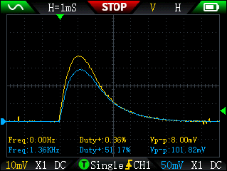
Рис. 5.2. Форма импульсов с выхода
RC-интегратора, к которому подключена измерительная катушка С-типа (КАНАЛ 1, 10 мВ/дел., желтый), и с выводов датчика Холла (КАНАЛ 2, 50 мВ/дел., синий): постоянная RC ≈ 1 c, площадь потокосцепления катушки 0.01 м2, чувствительность датчика Холла 45 мВ/Тл.На рис. 5.3 показана форма импульсов с выхода
RC-интегратора с постоянной времени 0.1 с, к которому подключена та же измерительная катушка, и с выводов датчика Холла. Чувствительность входа КАНАЛ 1 установлена равной 100 мВ/дел. Амплитуда магнитной индукции, измеренная с помощью катушки, также составляет примерно 3.6 Тл (КАНАЛ 1, 100 мВ/дел., желтый), что соответствует измерению с помощью RC-интегратора с большей в десять раз постоянной времени. Сигнал с выхода RC-интегратора с меньшей постоянной времени (0.1 с) на затухающем фронте уходит несколько ниже начального уровня, но, в принципе, можно считать, что для измерений параметров импульсов длительностью порядка 5 мс такой интегратор вполне подходит (необходимо, чтобы постоянная времени интегратора минимум на порядок была больше длительности импульса).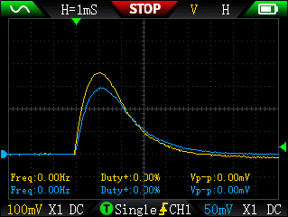
Рис. 5.3. Форма импульсов с выхода RC-интегратора, к которому подключена измерительная катушка С-типа (КАНАЛ 1, 100 мВ/дел., желтый), и с выводов датчика Холла (КАНАЛ 2, 50 мВ/дел., синий): постоянная RC ≈ 0.1 c, площадь потокосцепления катушки 0.01 м2, чувствительность датчика Холла 45 мВ/Тл.
6. Испытания в переменном магнитном поле
Для проведения испытаний в переменном магнитном поле использовалась схема, показанная на рис. 6.1. В качестве образцового применялся также датчик Холла (1). Переменное магнитное поле создавалось с помощью электромагнита
[17] переменного тока (3), в обмотки которого подавался синусоидальный ток от источника питания - в данном случае непосредственно от сети переменного тока напряжением 220 В частотой 50 Гц. Измерительная катушка (2) М-типа располагалась совместно с датчиком Холла (1) типа ПХЭ606118В [8] в рабочей зоне электромагнита (3). Измерительная катушка подключалась к RC-интегратору, а датчик Холла - к тесламетру [12]. С выхода RC-интегратора сигнал подавался на вход КАНАЛ 1 осциллографа 2C53T, а с выхода тесламетра с коэффициентом преобразования 1 В/Тл - на вход КАНАЛ 2.
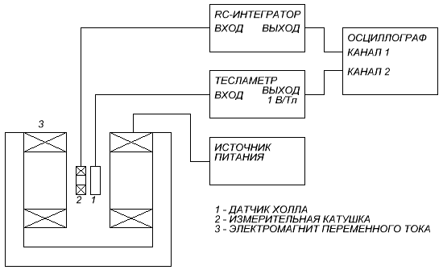
Рис. 6.1. Схема установки для проведения испытаний измерительных катушек с RC-интегратором в переменном магнитном поле.
При проведении измерений использовался интегратор с постоянной времени RC = 0.1 с, чтобы обеспечить достаточно высокий уровень сигнала. На рис. 6.2 показана форма сигнала с выхода RC-интегратора и с выхода тесламетра. Формы сигналов практически совпадают. Катушка М-типа имеет площадь потокосцепления <SN> = 0.01 м2, а постоянная времени интегратора RC = 0.1 с, поэтому чувствительность составляет 100 мВ/Тл. Чувствительность с выхода тесламетра при этом равна 1 В/Тл (1000 мВ/Тл). Из рисунка видно, что амплитуда магнитной индукции, измеренная с помощью катушки несколько больше 200 мТл (КАНАЛ 1, 20 мВ/дел., желтый), а амплитуда магнитной индукции, измеренная с помощью тесламетра с датчиком Холла, составляет примерно 200 мТл (КАНАЛ 2, 200 мВ/дел., синий). Соответствие измерений друг другу также достаточно хорошее.
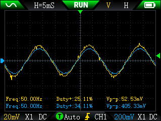
Рис. 6.2. Форма выходного сигнала с выхода RC-интегратора, к которому подключена измерительная катушка М-типа (КАНАЛ 1, 20 мВ/дел., желтый), и с выхода 1 В/Тл тесламетра с датчиком Холла (КАНАЛ 2, 200 мВ/дел., синий): постоянная RC ≈ 0.1 с, площадь потокосцепления катушки 0.01 м2, амплитуда магнитной индукции 200 мТл, частота 50 Гц.
Некоторое отклонение в результатах измерений с помощью измерительной катушки и датчика Холла (в пределах 10 %) как в импульсных, так и в переменных магнитных полях, может быть объяснено отличием рассчитанной площади потокосцепления катушки от реальной, а также неточностью в подборе параметров элементов интегратора, определяющих его постоянную времени. Также следует учитывать, что примененные
SMD-конденсаторы не отличаются высокой стабильностью емкости. Для повышения точности измерений может быть проведена предварительная калибровка измерительной катушки в комплексе с соответствующим RC-интегратором.7. Заключение
Использование измерительных катушек с простым интегратором на основе RC-цепи с грамотно подобранными площадью потокосцепления и постоянной времени позволяет проводить достаточно точные измерения магнитной индукции переменных и импульсных магнитных полей. Параметры интегратора (постоянная времени) и измерительной катушки (площадь потокосцепления) должны быть согласованы с параметрами магнитной индукции (частота, длительность импульса), а именно, постоянная времени должна существенно (на порядок и более) превышать период изменения магнитной индукции или длительность ее импульса. Если необходимо повысить точность измерений, то можно провести предварительную калибровку катушки с интегратором.
Предполагается использование данного устройства для проведения измерений сильных импульсных магнитных полей [1
5, 16], особенно с амплитудой индукции, превышающей 5 ... 10 Тл, а также в ситуациях, когда применение приборов на основе датчиков Холла может оказаться по каким-либо причинам затруднительным или невозможным. Кроме того, планируется применение измерительных катушек с интеграторами для снятия петель гистерезиса в сильных импульсных магнитных полях [2, 16] и в переменных полях умеренной напряженности [14].Желающие получить консультацию, помощь в проведении расчетов или приобрести продукцию могут обращаться к автору (см. раздел Контактная информация ).
Ссылки:
24
.02.2026Альтернативные источники
энергии
Компьютеры и
Интернет
Магнитные поля
Механотронные системы
Перспективные
разработки
Электроника и
технология